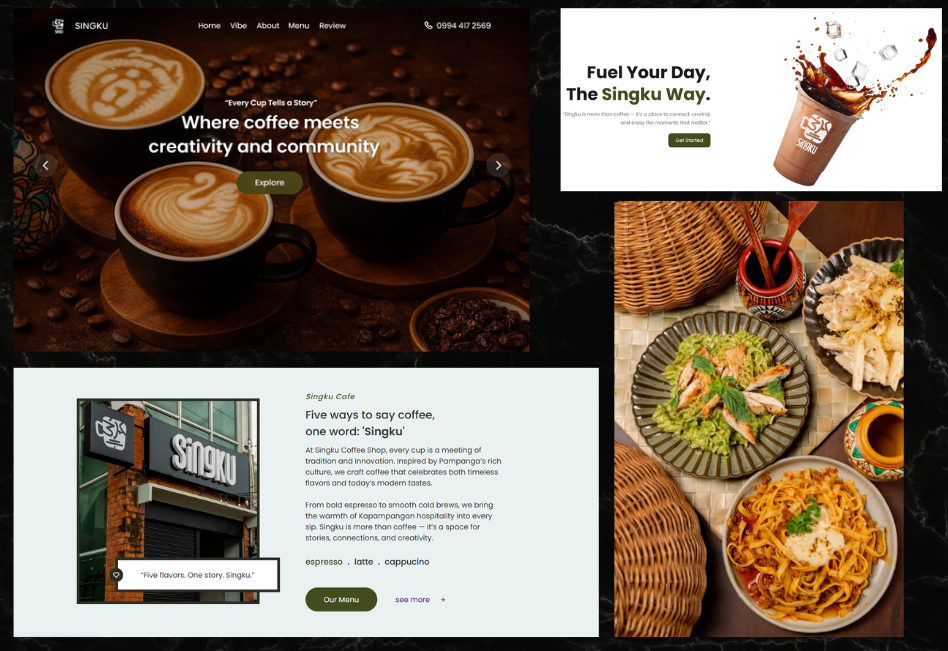

Singku-Inspired Café Website Design
This project is a modern café website inspired by Singku’s brand identity and customer experience.
The platform showcases featured drinks, meals, and desserts through a visually engaging and responsive interface.
It includes an interactive menu system, a simple cart functionality, and a receipt email feature, allowing users to simulate an online ordering experience. The design emphasizes clean layout, strong imagery, and warm café-themed aesthetics to reflect a welcoming coffee shop atmosphere.
3
Total Technologies
6
Main Features
Technologies Used

Key Features
- Responsive landing page with hero section
- Featured “Singku Specials” section
- Interactive menu showcase
- Simple cart tracking system
- Organized menu categories (Drinks, Meals, Snacks)
- Modern UI with aesthetic café theme